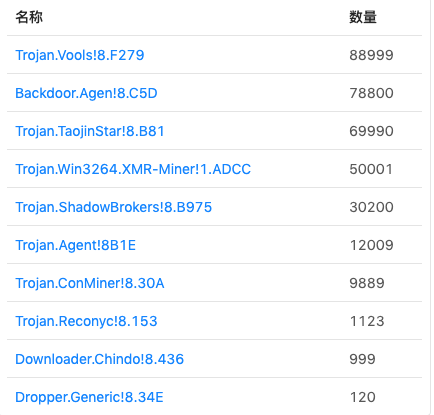
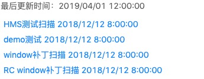
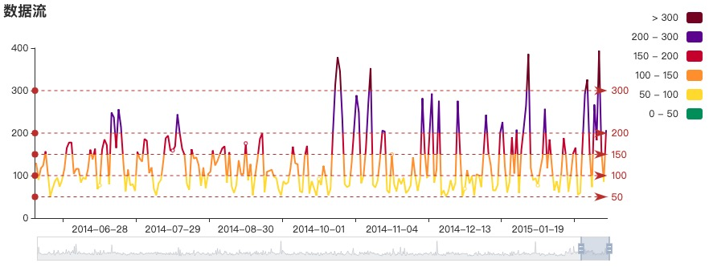
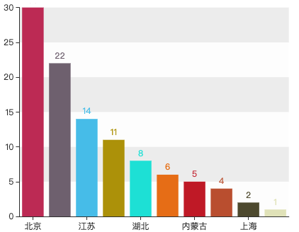
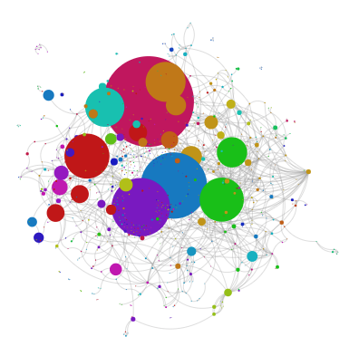

<div class="g-dashboard">
  <div class="tool-bar">
    <div class="bar-left">
      <label>仪表盘：</label>
      <nz-select style="width: 200px;" [(ngModel)]="source" nzPlaceHolder="请选择">
        <nz-option nzValue="风险管理" nzLabel="风险管理"></nz-option>
        <nz-option nzValue="系统监测" nzLabel="系统监测"></nz-option>
        <nz-option nzValue="安全性检测" nzLabel="安全性检测"></nz-option>
        <nz-option nzValue="网络概况" nzLabel="网络概况"></nz-option>
        <nz-option nzValue="应用监管" nzLabel="应用监管"></nz-option>
      </nz-select>
      <nz-button-group>
        <button nz-button>创建</button>
        <button nz-button>重命名</button>
        <button nz-button>删除</button>
      </nz-button-group>
    </div>
    <count-down></count-down>
  </div>
  <div class="dashboard-content">
    <div class="chart-lib" [ngClass]="{'show': showLibPanel}">
      <span class="add-btn" nzTitle="添加项" nzPlacement="left" nz-button nz-tooltip (click)="addChart()"><i nz-icon
          [nzType]="showLibPanel?'double-right':'double-left'" nzTheme="outline"></i></span>
      <div class="lib">
        <h3>图表数据项库</h3>
        <ul>
          <li>
            
            <p>2018年病毒Top10</p>
          </li>
          <li>
            
            <p>设备扫描情况</p>
          </li>
          <li>
            
            <p>数据流趋势分布</p>
          </li>
          <li>
            
            <p>2018年木马攻击地域分布</p>
          </li>
          <li>
            
            <p>可疑网站相关性</p>
          </li>
        </ul>
      </div>
    </div>
    <div class="drag-container">
      <div nz-row style="padding: 5px;">
        <div nz-col nzSpan="6">
          <virus-table [height]="480" [y]="0"></virus-table>
          <scans-link [height]="230" [y]="480"></scans-link>
        </div>
        <div nz-col nzSpan="12">
          <flow-data-chart [height]="400" [y]="0"></flow-data-chart>
          <relationship-chart [height]="500" [y]="400"></relationship-chart>
        </div>
        <div nz-col nzSpan="6">
          <scans-link [height]="230" [y]="0"></scans-link>
          <muma-chart [height]="400" [y]="230"></muma-chart>
        </div>
      </div>
      <ng-container *ngFor="let item of extras" [ngSwitch]="item.type">
        <virus-table *ngSwitchCase="0" [x]="item.x" [y]="item.y" [width]="item.width" [height]="item.height">
        </virus-table>
        <scans-link *ngSwitchCase="1" [x]="item.x" [y]="item.y" [width]="item.width" [height]="item.height">
        </scans-link>
        <flow-data-chart *ngSwitchCase="2" [x]="item.x" [y]="item.y" [width]="item.width" [height]="item.height">
        </flow-data-chart>
        <muma-chart *ngSwitchCase="3" [x]="item.x" [y]="item.y" [width]="item.width" [height]="item.height">
        </muma-chart>
        <relationship-chart *ngSwitchCase="4" [x]="item.x" [y]="item.y" [width]="item.width" [height]="item.height">
        </relationship-chart>
      </ng-container>
    </div>
  </div>
</div>